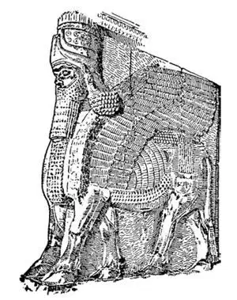
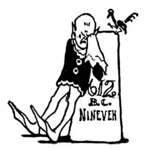

17
Kings with Corkscrew Curls
长着螺旋形卷发的国王们

AFTER Rome's bad start she had one king after another, and some of these kings were pretty good and some were pretty bad…
The most important city in the world at this time was far away from Rome on the Tigris River. This city was called Nineveh, and here lived the kings of the country called Assyria, which I told you about some time ago.
As usual, the chief thing we hear about Assyria and the Assyrians is that they were fighting with their neighbors. This, however, was not the fault of their neighbors.
The Assyrian kings who lived in Nineveh wanted more land and power, and so they fought their neighbors in order to take their land away from them. These kings had long corkscrew curls. They were such vicious fighters that they were feared far and near. They treated their prisoners terribly; they skinned them alive, cut off their ears, pulled out their tongues, bored sticks into their eyes, then bragged about it. They made the people whom they conquered pay them huge sums of money and promise to fight along with them whenever they went to war.
Assyria became so strong and powerful that it owned a lot of the world, the land between the rivers called Mesopotamia, and the land to the east, north, and south, and Phoenicia, and even Egypt.
This big, big country of Assyria was ruled by the kings at Nineveh, who lived in great magnificence. They built wonderful palaces for themselves, and on each side of the way that led to the palace, they placed rows of huge statues of bulls and lions with wings and men's heads. These winged animals are what are called cherubs in the Bible.
Perhaps you have heard a pretty little baby angel called a cherub. Isn't it strange that these Assyrian monsters should be called cherubs also?
When the Assyrian kings were not fighting men, they were fighting wild animals, for they were very fond of hunting with bow and arrow, and they had pictures and statues made of themselves on horseback or in chariots fighting lions. Often they would capture the animals they hunted alive and put them in cages so that the people could come and see them. This was something like a zoo such as we have nowadays.
The rulers of Assyria had very strange names. Sennacherib was one of the most famous. Sennacherib lived about 700 B.C. Once upon a time Sennacherib was fighting Jerusalem. His whole army was camped one night when as they lay asleep something happened, for when the morning came, none woke up; all were dead, both men and horses. An English poet named Byron has written a poem called The Destruction of Sennacherib describing this event. Perhaps they were poisoned; what do you think?

An Assyrian cherub （一个亚述“基路伯”）
Ashurbanipal was another king who ruled later—about 650 B.C.. He was a great fighter too, but he was also very fond of books and reading; so Ashurbanipal started the first public library. The books in that first public library were, however, very peculiar. Of course they were not printed books, and they were not even made of paper. They were made of mud with the words pressed into the clay before it dried. This writing was cuneiform, which I have already told you about. The books were not arranged in bookcases either, but were placed in piles on the floor. They were, however, kept in careful order and numbered so that a person who wanted to see a book in the library could call for it by its number.
Assyria reached the height of her power during the reign of Sennacherib and Ashurbanipal, and everything in Nineveh was so lovely for the Ninevites that the time when Ashurbanipal reigned was called the Golden Age.
Although everything in Nineveh was so lovely for the Ninevites, everywhere else the Assyrians were hated and feared, for their armies brought death and destruction wherever they went.
It came to pass that not long after Ashurbanipal died, two of the neighbors of Nineveh could stand it no longer. These two neighbors were the king of Babylon, who lived south, and a people called the Medes, who lived to the east. The kings of Babylon and the Medes got together and attacked Nineveh, and together they wiped that city off the face of the earth. This was in 612 B.C.— Six-One-Two—and the power of Nineveh and Assyria was killed dead. This, therefore is called the Fall of Nineveh, the end of Nineveh. We might put up a tombstone:

公元前612年
【中文阅读】
以邪恶为开端的罗马城以后迎来了一个又一个国王，其中有些国王还好，有些却相当坏……
当时世界上最重要的城市是在离罗马很远的底格里斯河畔。这个城市叫尼尼微，这里住着亚述国的历代国王。这个国家我在前面讲过了。
按照惯例，我们听到有关亚述和亚述人的最主要的事情就是他们总是和邻国打仗。但是，这并不是由于他们的邻居有什么错。
住在尼尼微的亚述国王们贪图更多的土地和更大的权力，因此，他们征讨邻国就是要夺取他们的土地。这些国王都留着长长的螺旋形卷发，他们因凶残善战而远近闻名，人们都很惧怕他们。他们对待俘虏十分残忍；常用活剥皮、割耳朵、拔舌头、扎眼睛这样的酷刑，还以此为荣而自夸。他们迫使那些被征服的人上缴大量的钱财，还迫使这些人保证随时和他们一起出兵打仗。
亚述变得非常强大而有实力，结果占领了世界上大片的土地，包括两河流域美索不达米亚和东面、北面、南面的土地，还有腓尼基，甚至埃及。
这个庞大的亚述国由定都于尼尼微的历代国王们统治着，他们居住的地方极尽奢华。他们为自己修建了富丽堂皇的宫殿，通往宫殿的道路两旁摆放着一行行长着翅膀和人头的公牛以及狮子的巨型雕像。这些长着翅膀的动物就是圣经中所谓的“基路伯”。
你可能听过有人把婴儿般美丽的天使叫“基路伯”，但是这些亚述人的怪物也叫“基路伯”，不是很奇怪吗？
亚述国王不和人打仗的时候，就和动物们作战，因为他们很喜欢用弓箭打猎。他们让人画的图画和雕像都表现了他们骑在马上或在战车上和狮子搏斗的样子。他们经常活捉那些猎到的动物，然后把它们关在笼子里让人们来观看。这有点像我们今天的动物园。
亚述国王们的名字都是稀奇古怪的。西拿基立是其中最有名的一位，他生活 在大约公元前700年。有一次，西拿基立正在攻打耶路撒冷。到了晚上，他的整个军队都扎营安顿下来，就在他们熟睡时，不知发生了什么奇怪的事，因为第二天早上，没有一个人醒过来；所有的人和马都死了。有个名叫拜伦的英国诗人写了一首题目叫《西拿基立的毁灭》的诗描述了这件事。可能他们是被毒死的，你怎么看这件事？
亚述巴尼拔是后来统治亚述的另一位国王——大约生活在公元前650年。他同样骁勇善战，但同时也很爱书籍和阅读；所以，亚述巴尼拔创建了第一个公共图书馆。但是，这第一个图书馆里的书却很独特。它们当然不是印刷出来的书，甚至不是用纸做的，而是用泥做成的，上面的文字是在泥土变干之前压上去的。这种文字是楔形文字，我在前面讲过。这些书也不是放在书架上，而是成堆地放在地上。但是，它们存放得很有次序，还编了号。因此，到图书馆看书的人，只要报出序号就可以找到书。
在西拿基立和亚述巴尼拔统治时期，亚述王国达到了权力的巅峰，尼尼微人认为尼尼微的一切都是美好的，因此，亚述巴尼拔的统治时期被称为“黄金时代”。
尽管尼尼微人对尼尼微的一切都感到十分满意，其他地方的人对亚述人却既恨又怕，因为他们的军队给所到之处带来的只有死亡和毁灭。
亚述巴尼拔死后不久，事情终于有了变化，尼尼微城的两个邻国再也无法忍受亚述的暴政了。这两个邻国分别是南边的巴比伦和东边的米堤亚。巴比伦国王和米堤亚人联合起来攻打尼尼微，他们一起把这座城市从地球上消除了。是在公元前612年——记住6—1—2——尼尼微和亚述王国的强权彻底被消灭了。这件事史称“尼尼微的衰亡”、“尼尼微的毁灭”。我们可以立一块墓碑了。（参见第87页图）